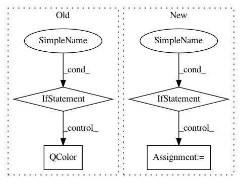

69a472517120ffee300a967b2fe9b3bc05f5cf4b,Orange/widgets/unsupervised/owmds.py,OWMDS,_setup_plot,#OWMDS#,363
Before Change
attr = attributes(self.matrix)
palette = colorpalette.ColorPaletteGenerator(len(attr))
color_data = [palette.getRGB(i) for i in range(len(attr))]
pen_data = [make_pen(QtGui.QColor(r, g, b, self.symbol_opacity),
cosmetic=True)
for r, g, b in color_data]
else:
pen_data = make_pen(QtGui.QColor(Qt.darkGray), cosmetic=True)
self._pen_data = pen_data
After Change
return numpy.zeros_like(a)
if self._pen_data is None:
if self._selection_mask is not None:
pointflags = numpy.where(
self._selection_mask,
mdsplotutils.Selected, mdsplotutils.NoFlags)
else:
pointflags = None
if have_data and self.color_index > 0:
color_var = self.colorvar_model[self.color_index]
if color_var.is_discrete:
palette = colorpalette.ColorPaletteGenerator(
In pattern: SUPERPATTERN
Frequency: 3
Non-data size: 4
Instances
Project Name: biolab/orange3
Commit Name: 69a472517120ffee300a967b2fe9b3bc05f5cf4b
Time: 2015-06-23
Author: ales.erjavec@fri.uni-lj.si
File Name: Orange/widgets/unsupervised/owmds.py
Class Name: OWMDS
Method Name: _setup_plot
Project Name: biolab/orange3
Commit Name: 7918df702a56fbcbf56f5f0f814b8f8b39e7b62c
Time: 2017-12-11
Author: ales.erjavec@fri.uni-lj.si
File Name: Orange/canvas/document/schemeedit.py
Class Name: SchemeEditWidget
Method Name: __signalManagerStateChanged
Project Name: biolab/orange3
Commit Name: 8a853048882723533bc57327b17cb2e2b80ba8c4
Time: 2019-04-05
Author: janez.demsar@fri.uni-lj.si
File Name: Orange/widgets/utils/plot/owplotgui.py
Class Name: VariablesDelegate
Method Name: paint